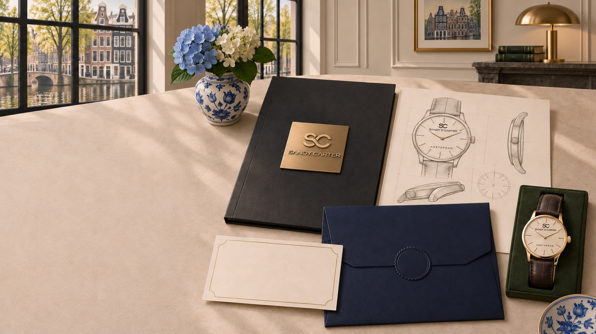

Journal · Gift guide
How to Choose
a Watch as a Gift
Balance personal style with sizing, product facts and exchange terms.
TIME REFINED
A watch can be a meaningful gift because it combines daily usefulness with personal expression. Choosing well requires observation: the most suitable watch reflects the recipient rather than the giver’s preferences alone.
Observe before you choose
Notice whether the recipient usually wears warm or cool metal tones, leather or bracelets, minimal or expressive accessories, and larger or quieter proportions. Their clothing, eyewear, jewellery and existing watches can reveal a consistent design language.
Consider when the watch is likely to be worn. A daily professional watch may need a different balance of restraint and comfort from an occasional style piece. Avoid assuming that gender labels alone determine colour, size or design preference.
Understand fit
Case diameter does not fully explain fit. Lug-to-lug length, thickness, weight and strap adjustment all matter. If possible, compare the published measurements with a watch the recipient already wears comfortably. For bracelets, confirm the adjustment process and whether additional links are supplied.
Choose versatility when uncertain
A clear dial, balanced case and adaptable colour can work across more settings. Interchangeable straps may expand styling options when the attachment system and lug width are compatible, but compatibility must be verified rather than assumed.
Check the commercial details
Review authenticity, warranty, delivery timing, return conditions and exchange rules before purchase. A gift receipt or flexible exchange policy can be more valuable than guessing perfectly. If buying through a marketplace, use only the verified official listing and follow the policy shown there.
A note about the upcoming collection
SANDY D CARTER has not published final models, prices or purchase links. This article provides a general framework only. Official Myntra availability will be linked when the collection is live; Flipkart onboarding is underway and is not yet presented as an active channel.
